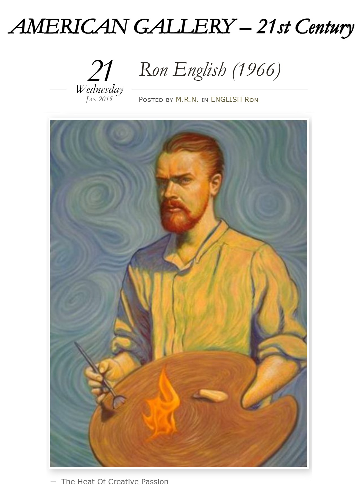

Exhibitions
POPaganda, Angstrom Gallery, Dallas, Texas, US, March 14, 1998.
Notes
Also known as The Burning Bush.
Selected Online Circulation
Selected examples of the work’s online circulation, reproduction, or discussion. This list is not exhaustive; it is intended to document representative appearances of the image beyond formal exhibition and publication records.
Ancillary Documentation
